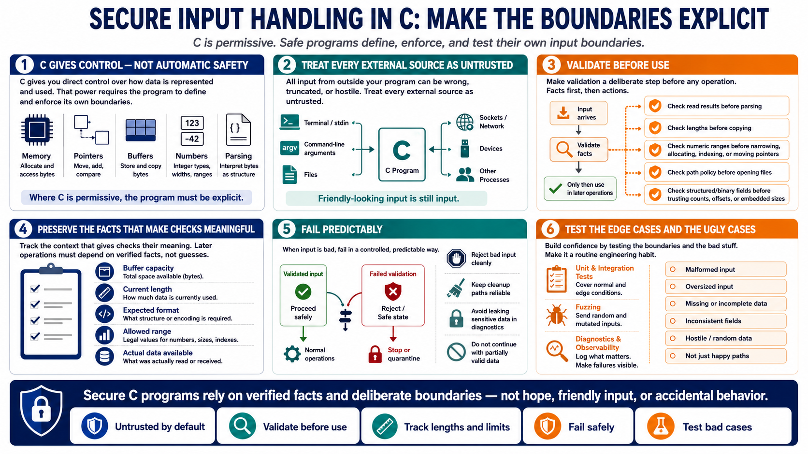

Course Summary and Key Takeaways
Connecting to LMS... Progress: in progress

Narration
Secure input handling in C is about making the program explicit where C is permissive. The language gives you direct control over memory, pointers, buffers, integer types, and parsing behavior. That control is powerful, but it means the program must define and enforce its own boundaries. The safest code treats every external source as untrusted, whether the bytes arrive from a terminal, an argument, a file, a socket, a device, or another process.
The strongest pattern is validation before use. Check read results before parsing. Check lengths before copying. Check numeric ranges before narrowing, allocating, indexing, or moving pointers. Check path policy before opening files. Check structured and binary fields before trusting counts, offsets, or embedded sizes. Preserve enough context to make those checks meaningful: buffer capacity, current length, expected format, allowed range, and actual data available.
Good C input handling is also predictable under failure. Reject malformed, oversized, incomplete, inconsistent, or hostile input cleanly. Keep cleanup paths reliable. Avoid leaking sensitive data through diagnostics. Test the edge cases and the ugly cases, not just the happy path. When secure input handling becomes a routine engineering habit, C programs become easier to reason about. They do not rely on hope, friendly input, or accidental behavior. They rely on verified facts and deliberate boundaries.